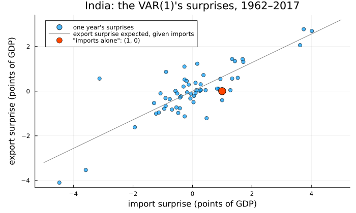
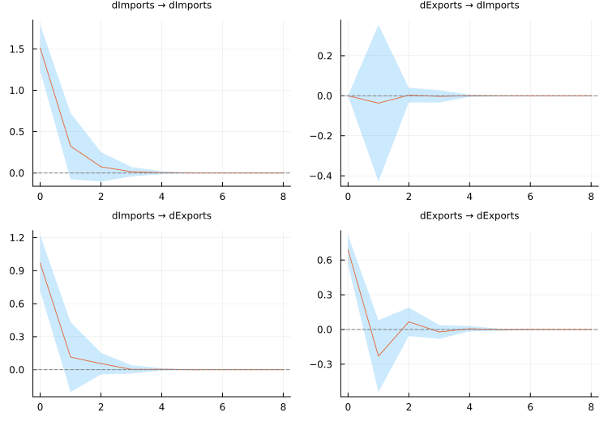
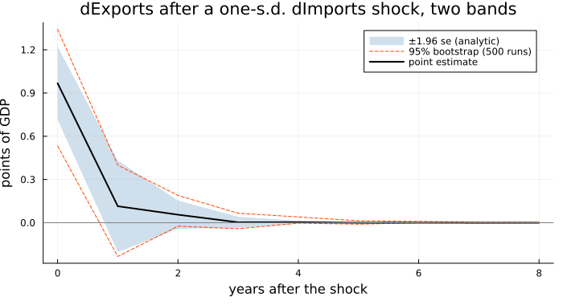
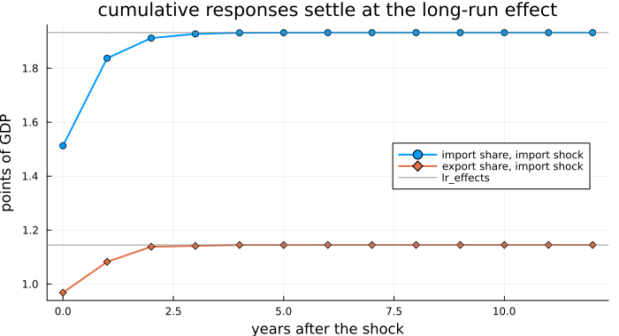
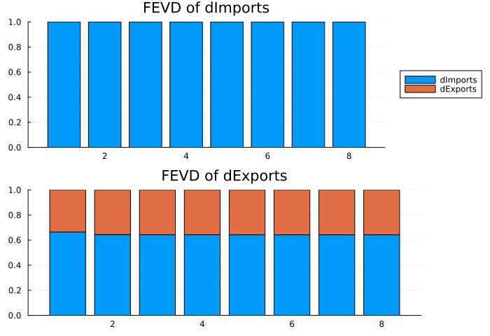
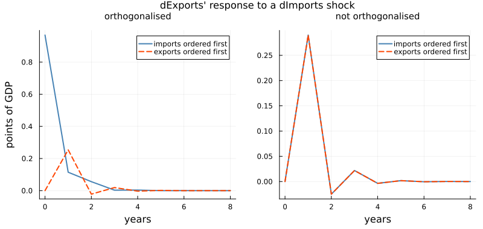
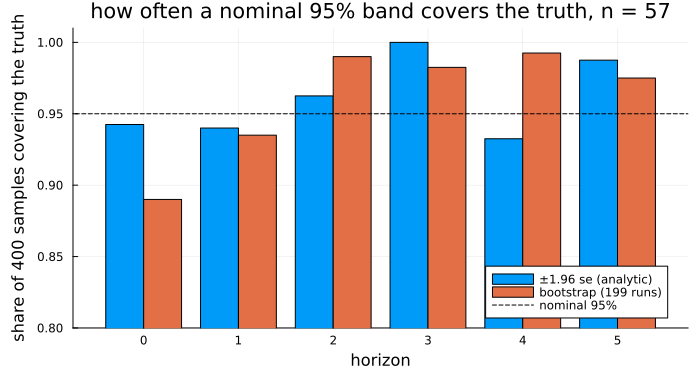

Tracing a Shock
using TSAnalytics, Plots, Statistics, LinearAlgebra, Random
g = dataset("global_economy")
ix = findall(==("India"), g.Country)
imports = Float64.(g.Imports[ix])
exports = Float64.(g.Exports[ix])
dY = (dImports = diff(imports), dExports = diff(exports))
m = fit_var(dY, 1)
u, S = m.resid, m.sigma_df
b = S[1, 2] / S[1, 1] # export surprise per point of import surprise
println("residual correlation: ", round(S[1, 2] / sqrt(S[1, 1] * S[2, 2]), digits=3),
" slope of export on import surprise: ", round(b, digits=3))residual correlation: 0.816 slope of export on import surprise: 0.64scatter(u[:, 1], u[:, 2]; label="one year's surprises", markersize=4, alpha=0.7,
xlabel="import surprise (points of GDP)", ylabel="export surprise (points of GDP)",
title="India: the VAR(1)'s surprises, 1962–2017", legend=:topleft,
left_margin=5Plots.mm, bottom_margin=3Plots.mm, size=(700, 420))
plot!(x -> b * x, -5, 5; color=:gray, label="export surprise expected, given imports")
scatter!([1.0], [0.0]; color=:orangered, markersize=8, label="\"imports alone\": (1, 0)")
Each point is one year of India's trade, seen through the vector autoregression Chapter 45 fitted to the year-to-year changes in the import and export shares of GDP: how far each change came in above or below what the model predicted from the year before. The cloud runs along a diagonal. A year in which imports surprised upwards was usually a year in which exports did too: the residual correlation is 0.816, and on average each point of import surprise came with 0.64 of a point of export surprise.
Suppose India's imports jump unexpectedly next year, by one percentage point of GDP. What happens to exports — next year, the year after, and for good? The red point is that experiment as most people first imagine it: imports up by one, exports not moving. It sits well below the diagonal; years like it occur, but they are not the typical import surprise. Chapter 45 ended on exactly this difficulty: with surprises this correlated, "a shock to imports alone" is not yet defined. This chapter defines it, and shows that the definition is a choice the data cannot make for you.
The obvious attempt
Take the fitted VAR literally. Put a one in the imports equation's error this year, zeros everywhere else, and run the recursion forward with no further surprises:
Φ = ma_rep(m, 8)
println("Φ₁ (rows: response dImports, dExports; columns: shock to dImports, dExports)")
show(stdout, "text/plain", round.(Φ[2], digits=3)); println()
println("dExports after a unit dImports shock, years 0–3: ", round.([M[2, 1] for M in Φ[1:4]], digits=3))Φ₁ (rows: response dImports, dExports; columns: shock to dImports, dExports)
2×2 Matrix{Float64}:
0.249 -0.054
0.29 -0.335
dExports after a unit dImports shock, years 0–3: [0.0, 0.29, -0.025, 0.022]By this reckoning the shock does nothing to exports in its own year, raises their change by 0.29 of a point the year after — the first column of A₁ from Chapter 45 — and has all but vanished by the third.
The answer is arithmetically correct and economically awkward. Its first value, a zero, is an assumption rather than a finding: the experiment froze this year's export surprise — the red point. Fed the export surprise that typically accompanies a one-point import surprise, the response would begin at 0.64. The size is arbitrary too: nothing says whether one point of GDP is a large surprise for imports or a small one. Both problems have one source: the equations' errors are correlated, and moving one while freezing the other is not how they move.
The idea
Chapter 17 turned a stationary autoregression into an infinite moving average: today's value as a weighted sum of every past surprise. A stable VAR turns the same way, with matrices for weights,
\[y_t = \mu + \sum_{i=0}^{\infty} \Phi_i\, u_{t-i}, \qquad \Phi_0 = I, \quad \Phi_i = \sum_{j=1}^{\min(i,p)} \Phi_{i-j} A_j ,\]
and Φ_i[k, j] is the response of variable k, i periods later, to a unit surprise in equation j — exactly what ma_rep returned. These are the non-orthogonalised impulse responses.
The cure is to rewrite correlated surprises as combinations of uncorrelated ones. Any P with PP' = Σ will do: w_t = P^{-1} u_t has identity covariance, so each w can move while the others are held still without stepping off the cloud. Substituting u_t = P w_t,
\[y_t = \mu + \sum_{i=0}^{\infty} \Psi_i\, w_{t-i}, \qquad \Psi_i = \Phi_i P ,\]
and the Ψ_i are the orthogonalised impulse responses, each to a one-standard-deviation shock. The usual P is the lower-triangular Cholesky factor of Σ, and being triangular it says something definite: the first variable responds within the period only to its own shock; the second to the first's shock and its own; and so on down the list. With imports first, an import shock carries along the export surprise that usually comes with it, and the export shock is whatever part of the export surprise imports do not explain.
Making it work
r = irf(m, 8; stderr=true)
println("Ψ₀ = P, the impact of each one-s.d. shock:")
show(stdout, "text/plain", round.(r.orth[1], digits=3)); println()
println("Ψ₁:"); show(stdout, "text/plain", round.(r.orth[2], digits=3)); println()
println("standard errors of Ψ₁:"); show(stdout, "text/plain", round.(r.stderr_orth[2], digits=3))Ψ₀ = P, the impact of each one-s.d. shock:
2×2 Matrix{Float64}:
1.513 0.0
0.968 0.687
Ψ₁:
2×2 Matrix{Float64}:
0.325 -0.037
0.115 -0.23
standard errors of Ψ₁:
2×2 Matrix{Float64}:
0.205 0.2
0.162 0.158h = 0:8
plot(r; size=(750, 520))
irf returns both forms at horizons 0 … 8, every matrix laid out [response, impulse]; plot draws the grid with its band. A one-standard-deviation import shock is 1.513 points of GDP — that settles the question of size — and with imports ordered first it moves exports by 0.968 in the same year, which is 0.64 times 1.513: the typical co-movement, now carried by the shock. The export shock moves imports by nothing at all, by construction. One year on, exports' response to the import shock is 0.115 with a standard error of 0.162, and in both off-diagonal panels the band straddles zero from the first year onward. On 56 annual observations, what a shock does after its own year cannot be told apart from nothing.
That band is asymptotic, and 56 points is not asymptotia. The alternative resamples the residuals, rebuilds the series, refits and recomputes, many times, from a seeded generator so the run repeats.
rb = irf(m, 8; boot=true, runs=500, rng=MersenneTwister(48))
pt = [M[2, 1] for M in r.orth]
se = [V[2, 1] for V in r.stderr_orth]
println("impact, analytic: [", round(pt[1] - 1.96se[1], digits=3), ", ", round(pt[1] + 1.96se[1], digits=3),
"] bootstrap: [", round(rb.lower[1][2, 1], digits=3), ", ", round(rb.upper[1][2, 1], digits=3), "]")impact, analytic: [0.714, 1.222] bootstrap: [0.533, 1.342]plot(h, pt .+ 1.96 .* se; fillrange=pt .- 1.96 .* se, fillalpha=0.25, linealpha=0,
color=:steelblue, label="±1.96 se (analytic)")
plot!(h, [M[2, 1] for M in rb.upper]; color=:orangered, linestyle=:dash, label="95% bootstrap (500 runs)")
plot!(h, [M[2, 1] for M in rb.lower]; color=:orangered, linestyle=:dash, label="")
plot!(h, pt; color=:black, lw=2, label="point estimate", xlabel="years after the shock",
ylabel="points of GDP", title="dExports after a one-s.d. dImports shock, two bands",
bottom_margin=4Plots.mm, size=(700, 380))
hline!([0.0]; color=:gray, label="")
The two agree on the conclusion and differ at impact. The analytic band is symmetric about the estimate because the formula makes it so; the bootstrap band reaches much further down than up, to 0.533. That asymmetry is information about a short sample, and it is what the bootstrap is for.
The VAR is fitted to changes, so summed responses are responses of the level: how much higher a share stands, years later. cumulative = true sums them, and for a stable VAR the sums settle at the limit lr_effects returns directly.
rc = irf(m, 12; cumulative=true)
L = lr_effects(m; orth=true)
println("companion roots: ", round.(roots(m), digits=3))
println("cumulative, import share after an import shock, years 0–3: ",
round.([M[1, 1] for M in rc.orth[1:4]], digits=3))
println("long-run effect of one-s.d. shocks (rows: dImports, dExports):")
show(stdout, "text/plain", round.(L, digits=3))companion roots: [0.307, 0.221]
cumulative, import share after an import shock, years 0–3: [1.513, 1.837, 1.912, 1.927]
long-run effect of one-s.d. shocks (rows: dImports, dExports):
2×2 Matrix{Float64}:
1.932 -0.036
1.145 0.507h12 = 0:12
pc = plot(h12, [M[1, 1] for M in rc.orth]; lw=2, marker=:circle, label="import share, import shock",
xlabel="years after the shock", ylabel="points of GDP", legend=:right,
title="cumulative responses settle at the long-run effect", size=(700, 380))
plot!(pc, h12, [M[2, 1] for M in rc.orth]; lw=2, marker=:diamond, label="export share, import shock")
hline!(pc, [L[1, 1], L[2, 1]]; color=:gray, linestyle=:dot, label="lr_effects")
A one-standard-deviation import shock leaves the import share 1.932 points higher for good and the export share 1.145 higher, and it gets nearly all the way within two years because the companion roots, 0.307 and 0.221, are small. The shock is permanent in the levels because the model is in differences; whether that is the right model for two shares that may be tied together is Chapter 49's question.
The last tool turns the question round: how much of a variable's forecast error does each shock account for? The H-step forecast error of Chapter 22 is a sum of the next H shocks, so once they are uncorrelated its variance splits cleanly between them.
f = fevd(m, 8)
println("horizons: ", f.horizons)
println("dImports' share from its own shock, at 1, 2, 8 years: ", round.(f.decomp[1, [1, 2, 8], 1], digits=3))
println("dExports' share from the dImports shock, at 1, 2, 8 years: ", round.(f.decomp[2, [1, 2, 8], 1], digits=3))horizons: 1:8
dImports' share from its own shock, at 1, 2, 8 years: [1.0, 0.999, 0.999]
dExports' share from the dImports shock, at 1, 2, 8 years: [0.665, 0.644, 0.643]plot(f; size=(700, 480))
fevd starts at horizon 1, not 0 — a one-step forecast already has error — so it does not share an axis with irf. With imports first, import shocks account for essentially all of imports' own forecast error and two-thirds of exports': 0.665 at one year, 0.643 at eight. The bars stop changing after two years. For a stable VAR the forecast error variance converges to the unconditional variance, the shares converge with it, and the limiting shares are the decomposition's real answer.
ma_rep and orth_ma_rep return the matrices horizon first, Φ[i + 1] being Φ_i; analytic standard errors come from irf_stderr, attached only on request. Each bootstrap replication draws from its own generator seeded from rng, so a threaded run returns bands bit-identical to a serial one.
The complication
Everything above began from one decision, made silently by the order of the columns in dY: imports first. Reverse it.
mr = fit_var((dExports = diff(exports), dImports = diff(imports)), 1)
rr, fr = irf(mr, 8), fevd(mr, 8)
println("log-likelihood, imports first: ", round(m.loglik, digits=4), " exports first: ", round(mr.loglik, digits=4))
println("dExports' response to a dImports shock, years 0–2")
println(" imports first: ", round.([M[2, 1] for M in r.orth[1:3]], digits=3))
println(" exports first: ", round.([M[1, 2] for M in rr.orth[1:3]], digits=3))
println("one-year FEVD share of the second-ordered variable from the first's shock: ",
round(f.decomp[2, 1, 1], digits=3), " (exports ← imports) ",
round(fr.decomp[2, 1, 1], digits=3), " (imports ← exports); ρ² = ",
round(S[1, 2]^2 / (S[1, 1] * S[2, 2]), digits=3))log-likelihood, imports first: -157.9882 exports first: -157.9882
dExports' response to a dImports shock, years 0–2
imports first: [0.968, 0.115, 0.056]
exports first: [0.0, 0.254, -0.022]
one-year FEVD share of the second-ordered variable from the first's shock: 0.665 (exports ← imports) 0.665 (imports ← exports); ρ² = 0.665pa = plot(h, [M[2, 1] for M in r.orth]; lw=2, label="imports ordered first", color=:steelblue,
title="orthogonalised", titlefontsize=10, ylabel="points of GDP", xlabel="years")
plot!(pa, h, [M[1, 2] for M in rr.orth]; lw=2, label="exports ordered first",
color=:orangered, linestyle=:dash)
pb = plot(h, [M[2, 1] for M in r.nonorth]; lw=2, label="imports ordered first", color=:steelblue,
title="not orthogonalised", titlefontsize=10, xlabel="years")
plot!(pb, h, [M[1, 2] for M in rr.nonorth]; lw=2, label="exports ordered first",
color=:orangered, linestyle=:dash)
plot(pa, pb; layout=(1, 2), size=(800, 380), left_margin=4Plots.mm, bottom_margin=4Plots.mm,
top_margin=3Plots.mm, plot_title="dExports' response to a dImports shock", plot_titlefontsize=11)
The two orderings are the same model, with the same log-likelihood; nothing in the data prefers either. On the right, the non-orthogonalised responses coincide exactly — a unit surprise in the imports equation is the same thing whichever row it is written in. On the left are two stories. With imports first, an import shock moves exports by 0.968 at once and 0.115 a year later. With exports first, the import shock is the part of the import surprise that exports do not explain; it moves exports by nothing that year, by construction, and by 0.254 the next.
The variance decomposition shows its hand more plainly. At one year, whichever variable is ordered second takes 0.665 of its forecast error variance from the other's shock — the squared residual correlation, nothing else. Ordered one way, imports drive two-thirds of exports' surprises; ordered the other, the reverse. The decomposition has measured the correlation in the first figure and handed it to whichever variable you listed first.
This is not a defect to be fixed. A within-year correlation of 0.816 has no direction; any direction comes from you. For India's trade there are arguments both ways — imported inputs become exports within the year, and export earnings pay for imports — and annual data can test neither. When the ordering is chosen, say why; when it cannot be justified, report both and notice what survives the swap. Here the non-orthogonalised responses and the near-zero effects after the first year survive. The attribution of the common movement does not.
There is a quieter complication in the bands. Take the fitted India VAR as the truth, draw four hundred simulated samples of the same length from it, with well-behaved normal errors, and count how often each 95% band covers the true response of exports to an import shock:
A1, ν, P = m.A[1], vec(m.det_coef), cholesky(Symmetric(S)).L
truth = irf(m, 5).orth
function simulate(rng, n; burn=50) # the fitted VAR(1) as the data-generating process
y = zeros(n + burn, 2)
for t in 2:n+burn; y[t, :] = ν + A1 * y[t-1, :] + P * randn(rng, 2); end
y[burn+1:end, :]
end
rng, R = MersenneTwister(48), 400
an, bt = zeros(6), zeros(6)
for rep in 1:R
ms = fit_var(simulate(rng, 57), 1)
ra = irf(ms, 5; stderr=true)
rs = irf(ms, 5; boot=true, runs=199, rng=MersenneTwister(rep))
τ = [M[2, 1] for M in truth]
an .+= abs.([M[2, 1] for M in ra.orth] .- τ) .<= 1.96 .* [V[2, 1] for V in ra.stderr_orth]
bt .+= [rs.lower[k][2, 1] <= τ[k] <= rs.upper[k][2, 1] for k in 1:6]
end
println("true response, horizons 0–5: ", round.([M[2, 1] for M in truth], digits=3))
println("coverage, analytic: ", an ./ R)
println("coverage, bootstrap: ", bt ./ R)true response, horizons 0–5: [0.968, 0.115, 0.056, 0.003, 0.004, -0.0]
coverage, analytic: [0.9425, 0.94, 0.9625, 1.0, 0.9325, 0.9875]
coverage, bootstrap: [0.89, 0.935, 0.99, 0.9825, 0.9925, 0.975]bar((0:5) .- 0.2, an ./ R; bar_width=0.4, label="±1.96 se (analytic)", ylims=(0.8, 1.01),
legend=:bottomright, xlabel="horizon", ylabel="share of 400 samples covering the truth",
title="how often a nominal 95% band covers the truth, n = 57", size=(700, 380),
left_margin=4Plots.mm, bottom_margin=4Plots.mm)
bar!((0:5) .+ 0.2, bt ./ R; bar_width=0.4, label="bootstrap (199 runs)")
hline!([0.95]; color=:black, linestyle=:dash, label="nominal 95%")
At impact, where the response is largest, the bootstrap band covers the truth 0.89 of the time rather than 0.95 — the small-sample undercoverage Kilian (1998) documented for this interval, and which the manual's Causality and Impulse Responses also found, at 92–93%, on a known VAR with n = 200. From horizon 2 the true response is close to zero and coverage wanders either side of nominal; a 95% label means little for an effect that is barely there. And this is the easy case: Chapter 45 found the real surprises three to four times larger after 2003, and a residual bootstrap that shuffles years across that break pretends the variance never moved.
On the numbers, the three agree. Run on the India VAR, vars 1.6.1 and statsmodels 0.14.1 and 0.15.0 reproduce every orthogonalised response at horizons 0 to 8 and every share of fevd(m, 8) to within 5e-16, and statsmodels' analytic standard errors match irf_stderr as closely. vars has no analytic standard errors at all — its irf offers boot, ci, runs and seed and nothing else — so statsmodels is the only software reference, and its own source flags the textbook statement of the orthogonalised formula (# Lutkepohl typo, cov_sig correct).
They disagree on what to do when the question has no answer. Fit econ5 in levels at two lags, as Chapter 45 did:
m5 = fit_var(dataset("econ5"), 2)
println("largest root ", round(roots(m5)[1], digits=4))
try
lr_effects(m5)
catch err
println(first(sprint(showerror, err), 118), " …")
end
naive = inv(I - m5.A[1] - m5.A[2])
cum = irf(m5, 400; cumulative=true).nonorth
println("(I − A₁ − A₂)⁻¹[gnp, unemp] = ", round(naive[2, 1], digits=1),
" cumulative response at 100, 200, 400 quarters: ",
round.([cum[k][2, 1] for k in (101, 201, 401)], digits=0))largest root 1.0062
ArgumentError: lr_effects: the VAR is not stable (largest companion root 1.006183 >= 1), so the cumulative response do …
(I − A₁ − A₂)⁻¹[gnp, unemp] = -2175.5 cumulative response at 100, 200, 400 quarters: [1631.0, 4875.0, 22016.0]statsmodels' long_run_effects() (both versions, same data) returns that inverse anyway: −2175.4619 in the GNP row and unemployment column. The cumulative response it claims to be the limit of is positive and still growing at four hundred quarters. lr_effects refuses; irf at finite horizons keeps working.
Where this leaves you
You can trace a shock through a fitted VAR — Φ_i for a surprise in one equation, Ψ_i for a one-standard-deviation shock once Σ has been factored — put a band on it, knowing both bands can undercover on sixty observations, sum responses into effects on levels, and split each forecast error variance by shock.
What you cannot do yet is name the shocks. A Cholesky ordering is the crudest identifying assumption there is — a timing claim that nobody can defend for India's annual trade in either direction — and every orthogonalised number here depends on it. Chapter 51 replaces it with restrictions from economics, on the impact matrix or the long run. First, though, Chapter 45's other open question returns — whether non-stationary series are bound together in their levels — and Chapter 49 takes it up.
See also
- Chapter 17 — the moving-average form of an autoregression, of which
Φ_iis the vector version - Chapter 22 — forecast errors, which the variance decomposition splits by shock
- Chapter 47 — Granger causality, the other way of reading a fitted VAR
- Chapter 51 — structural identification beyond the Cholesky ordering
- Causality and Impulse Responses — the manual chapter, with every argument and reference convention
- API:
irf,ma_rep,orth_ma_rep,irf_stderr,lr_effects,fevd,IRFResult,FEVDResult